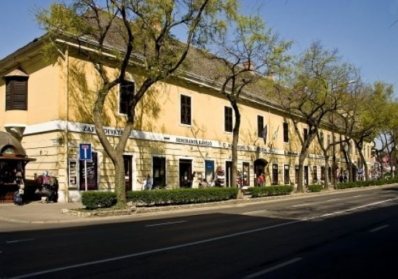

A Thúry György Múzeum története
A múzeum ősét az 1900-as évek elejétől a piarista gimnázium „régiségtára” alkotta. 1913-ban Halis István
városi tanácsost nevezték ki könyvtárosnak és múzeumőrnek, aki 1919-ig hivatali szobájában gyűjtötte a
könyveket és a régiségeket. Ezután a Városházán adtak át két szobát erre a célra. A Tanácsköztársaság alatt
ugyan határozatot hoztak a múzeum létesítésére — még a bélyegzője is elkészült —, de néhány évig a
tevékenységéről nincs tudomásunk. 1923-ban az új gimnáziumban (Sugár u.13.) rendeztek be négy szobát a
múzeum és könyvtár számára. Halis István 1925-ig vezette a két gyűjteményt, azután a kegyesrendi tanárok
(Sótonyi István, dr. Kerkay József, Szakáll Gyula, Grujber József) látták el másodállásban a teendőket.
